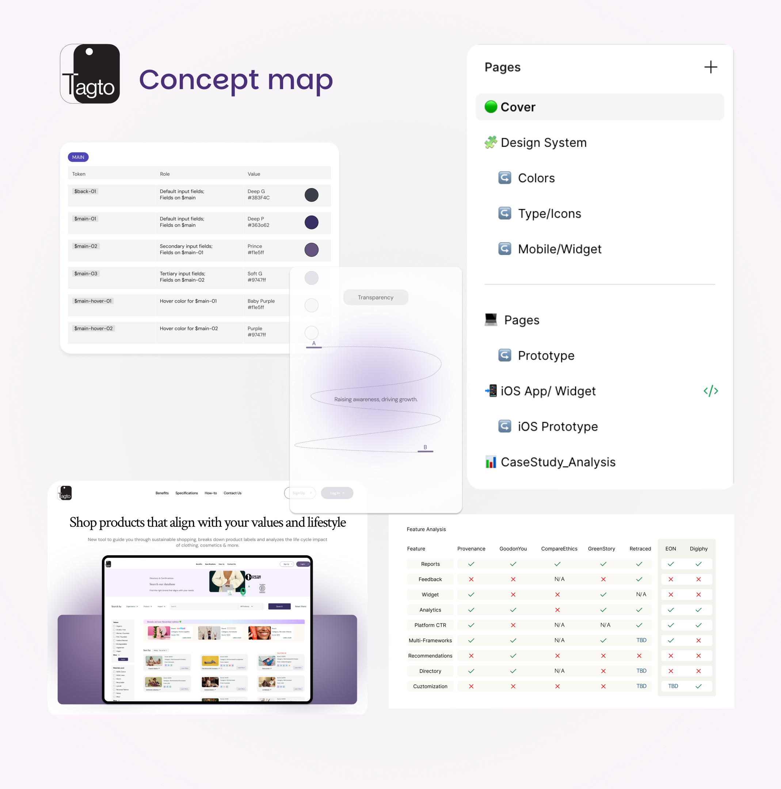
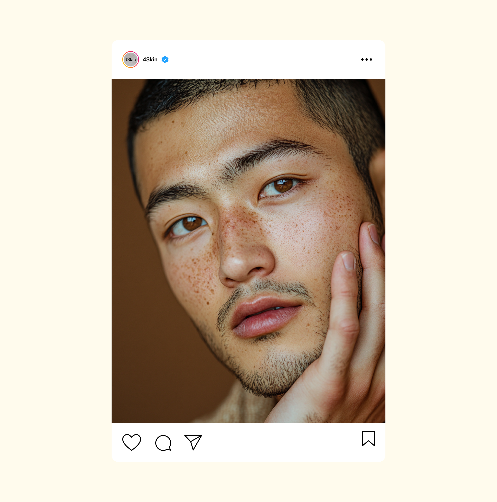

Good work starts before the first brief is written.
I start with research, audience, and positioning, then turn it into clear creative direction. I also write strategy as Markdown (.md) files: brand voice, messaging, and AI prompt guides that teams and AI tools can reuse on every project.

Every touchpoint is a chance to say something worth remembering.
Concept, messaging, and rollout across email, social, and web, then measured and refined with performance data so each campaign gets sharper than the last.

One page. One goal. Every element earning its place.
I design and build landing pages that transform a visit into an experience: story-led layouts, interaction, and motion that guide people toward one clear action. From Figma to live, responsive on every screen.
Built to stop the scroll and built to last beyond it.
Platform-native assets built from one consistent visual system, so every post, story, and ad feels unmistakably like the brand.
